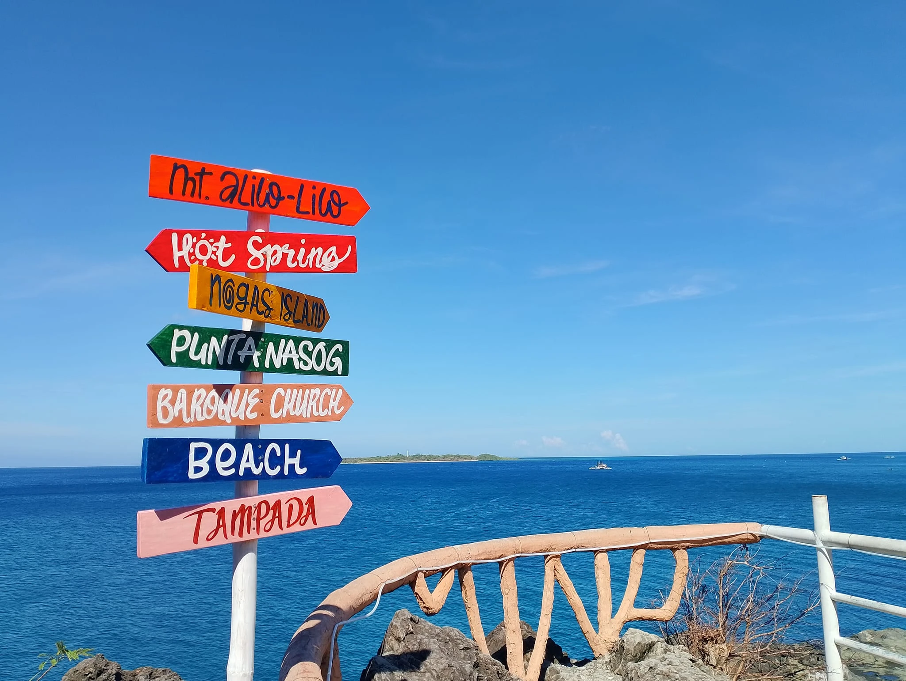

Getting Here
Brgy. Nato, Anini-y, Antique 5717, Philippines
From San Jose de Buenavista, take a van or bus to Anini-y town proper (~1.5 hrs), then hire a tricycle to Sira-an Hot Spring (~15 mins).
Iloilo International Airport. From Iloilo City, take a Ceres bus or van to San Jose de Buenavista (~3–4 hrs), then continue to Anini-y.
Open daily, 6:00 AM – 10:00 PM. Overnight guests may enjoy the springs until closing.
Affordable entrance fees apply. Contact the resort directly for current rates and room reservations.
🏝️ Nogas Island
A pristine uninhabited island with crystal-clear waters, perfect for snorkeling and day trips by boat.
⛰️ Punta Nasog
A scenic rocky headland offering panoramic views of the coastline and the open sea.
⛪ Baroque Church
The historic Anini-y Church, a centuries-old Spanish colonial structure with beautiful stone architecture.
🏔️ Mt. Aliw-Liw
A popular hiking trail with rewarding views of the Antique coastline from the summit.
🏖️ Le Grande Bayo
Escape the ordinary at Le Grande Bayo. A taste of paradise with a perfect view to match.